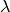
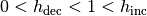
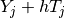
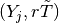
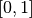
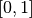
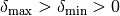
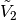
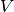

Numerical continuation and bifurcation¶
Let an algebraic problem coming from discretisation of a FEM-model can be written in the form
In what follows, we shall suppose that the model depends on an additional scalar parameter  so that .
Numerical continuation¶
Methods of numerical continuation serve for tracing solutions of the system
In GetFEM++, a continuation technique for piecewise ( )
solution curves is implemented (see [Li-Re2014] for more details). Since it
does not make an explicit difference between the state variable
)
solution curves is implemented (see [Li-Re2014] for more details). Since it
does not make an explicit difference between the state variable  and
the parameter , we shall denote for
brevity. Nevertheless, to avoid bad scaling when calculating tangents, for
example, we shall use the following weighted scalar product and norm:
and
the parameter , we shall denote for
brevity. Nevertheless, to avoid bad scaling when calculating tangents, for
example, we shall use the following weighted scalar product and norm:
Here,  should be chosen so that
is proportional to the scalar
product of the corresponding space variables, usually in
should be chosen so that
is proportional to the scalar
product of the corresponding space variables, usually in  . One can
take, for example, , where
. One can
take, for example, , where  is the mesh size and
is the mesh size and
 stands for the dimension of the underlying problem. Alternatively,
can be chosen as for simplicity.
stands for the dimension of the underlying problem. Alternatively,
can be chosen as for simplicity.
The idea of the continuation strategy is to continue smooth pieces of solution curves by a classical predictor-corrector method and to join the smooth pieces continuously.
The particular predictor-corrector method employed is a slight modification of the inexact Moore-Penrose continuation implemented in MATCONT [Dh-Go-Ku2003]. It computes a sequence of consecutive points lying approximately on a solution curve and a sequence of the corresponding unit tangent vectors :
To describe it, let us suppose that we have a couple satisfying the relations above at our disposal. In the prediction, an initial approximation of is taken as
where is a step size. Its choice will be discussed later on.
In the correction, one computes a sequence
, where
and the couple  is given by one
iteration of the Newton method applied to the equation
with
is given by one
iteration of the Newton method applied to the equation
with
and the initial approximation . Due to the
potential non-differentiability of  , a piecewise-smooth variant of the
Newton method is used (Algorithm 7.2.14 in [Fa-Pa2003]).
, a piecewise-smooth variant of the
Newton method is used (Algorithm 7.2.14 in [Fa-Pa2003]).
Correction.
A couple is accepted for
if
,
, and the
cosine of the angle between and is greater or
equal to . Let us note that the partial gradient of
(or of one of its selection functions in the case of the
non-differentiability) with respect to is assembled analytically
whereas the partial gradient with respect to is evaluated by
forward finite differences with an increment equal to 1e-8.
The step size in the next prediction depends on how the Newton correction has been successful. Denoting the number of iterations needed by , it is selected as
where , and are given constants. At the beginning, one sets for some .
Now, let us suppose that we have approximated a piece of a solution curve
corresponding to one sub-domain of smooth behaviour of and we want to
recover a piece corresponding to another sub-domain of smooth behaviour. Let
 be the last computed couple.
be the last computed couple.
Transition between smooth pieces of a solution curve.
To approximate the tangent to the other smooth piece, we first take a point
 with a bit greater than
so that this point belongs to the interior of the other
sub-domain of smooth behaviour. Then we find such that
and it remains to determine an appropriate direction of this vector. This can be done on the basis of the following observations: First, there exists such that remains in the same sub-domain as for any positive. This is characterised by the fact that is significantly smaller than 1 for with . Second, appears in the other sub-domain for larger than some positive threshold, and, for such values, is close to 1 for with .
This suggests the following procedure for selecting the desired direction of : Increase the values of successively from , and when you arrive at and such that
take as the approximation of the tangent to the other smooth piece.
Having this approximation at our disposal, we restart the predictor-corrector with .
In GetFEM++, the continuation is implemented for two ways of parametrisation of the model:
The parameter is directly a scalar datum, which the model depends on.
The model is parametrised by the scalar parameter via a vector datum
 , which the model depends on. In this case, one takes
the linear path
, which the model depends on. In this case, one takes
the linear pathwhere and are given values of
, and one
traces the solution set of the problem
Detection of limit points¶
When tracing solutions of the system , one may be interested in limit points (also called fold or turning points), where the number of solutions with the same value of changes. These points can be detected by a sign change of a test function :
where is defined by

Limit point.
Numerical bifurcation¶
A point is called a bifurcation point of the system if and two or more distinct solution curves pass through it. The following result gives a test for smooth bifurcation points (see, e.g., [Georg2001]):
Let be a parametrisation of a solution curve and be a bifurcation point. Moreover, let , , , and
Define via
Then changes its sign at .
Obviously, if one takes  ,
,  and randomly, it is
highly possible that they satisfy the requirements above. Consequently, the
numerical continuation method is able to detect bifurcation points by
taking the vectors
and randomly, it is
highly possible that they satisfy the requirements above. Consequently, the
numerical continuation method is able to detect bifurcation points by
taking the vectors  and
and  supplied by the correction at each
continuation step and monitoring the signs of .
supplied by the correction at each
continuation step and monitoring the signs of .
Once a bifurcation point is detected by a sign change , it can be approximated more precisely by the predictor-corrector steps described above with a special step-length adaptation (see Section 8.1 in [Al-Ge1997]). Namely, one can take the subsequent step lengths as
until , which corresponds to the secant method for finding a zero of the function .
Finally, it would be desirable to switch solution branches. To this end, we shall consider the case of the so-called simple bifurcation point, where only two distinct solution curves intersect.
Let be an approximation of that we are given and be the first part of the solution of the augmented system for computing the test function . As proposed in [Georg2001], one can take as a predictor direction and do one continuation step starting with to obtain a point on a new branch. After this continuation step has been performed successfully and a point on the new branch has been recovered, one can proceed with usual predictor-corrector steps to trace this branch.
Recently, tools for numerical -bifurcation have been developed in
GetFEM++. Let be a matrix function of a real parameter now defined by
As proposed in [Li-Re2014hal], the following test can be used for detection of
a bifurcation point between and :
To perform this test numerically, introduce
and analogously as above via
It follows from Cramer’s rule that
provided that is non-zero. Hence if ,
and are chosen so that is non-zero whenever
is zero, then the sign changes of
are characterised by passings of through 0
whereas the sign changes of by sign changes of
caused by singularities. To conclude, the
sign of is determined by following the
behaviour of and monitoring the sign changes
of when  passes through .
passes through .
As justified in [Li-Re2014hal], , and can be
chosen randomly again. The increments of the current values of
are changed adaptively so that singularities of
are treated effectively. After each calculation of
, is set as follows:
where  and are given constants and .
When a bifurcation point is detected between and
, it is approximated more precisely by a bisection-like
procedure. The obtained approximation lies on the same smooth branch as
and the corresponding unit tangent that points out from the
corresponding region of smoothness is calculated too.
Contrary to the smooth case, it is not clear how many branches can emanate from
the bifurcation point and in which directions they could be
sought. For this reason, continuation steps for a whole sequence of predictor
directions are tried out for finding points on new branches.
Denoting , the approximation of the bifurcation point and the corresponding tangent, respectively, the predictor directions are taken as follows: For a couple of reference vectors and , one takes with  satisfying
where passes through a set of linear combinations of
and . The total number of the linear
combinations is given by  and the reference vectors are
chosen successively according to the following strategy:
and the reference vectors are
chosen successively according to the following strategy:
One takes
 and such
that
and such
thatLet denote the set of unit tangents that correspond to the points from the branches found so far and that are oriented in the directions of branching from the bifurcation point. Then and are taken successively as different combinations from .
If all combinations that are available so far have already been used, let be unchanged and take with satisfying
Here, equals the vector employed previously and is chosen randomly.
The total number of selections of and is given by .
More details on numerical branching can be found in [Li-Re2015hal].
Approximation of solution curves of a model¶
The numerical continuation is defined in getfem/getfem_continuation.h. In order to use it, one has to set it up via the corresponding object first:
getfem::cont_struct_getfem_model S(model, parameter_name, sfac, ls, h_init, h_max, h_min, h_inc, h_dec,
maxit, thrit, maxres, maxdiff, mincos, maxres_solve, noisy, singularities,
non-smooth, delta_max, delta_min, thrvar, ndir, nspan);
where parameter_name is the name of the model datum representing
, sfac represents the scale factor , and ls
is the name of the solver to be used for the linear systems incorporated in the
process (e.g., getfem::default_linear_solver<getfem::model_real_sparse_matrix, getfem::model_real_plain_vector>(model)). The real numbers h_init,
h_max, h_min, h_inc, h_dec denote ,
, , ,
and , the integer maxit is the maximum number of
iterations allowed in the correction and thrit, maxres, maxdiff,
mincos, and maxres_solve denote ,
 , , , and the
target residual value for the linear systems to be solved, respectively. The
non-negative integer noisy determines how detailed information has to be
displayed in the course of the continuation process (the larger value the more
details), the integer singularities determines whether the tools for
detection and treatment of singular points have to be used (0 for ignoring them
completely, 1 for detecting limit points, and 2 for detecting and treating
bifurcation points, as well), and the boolean value of non-smooth determines
whether only tools for smooth continuation and bifurcation have to be used
or even tools for non-smooth ones do. The real numbers delta_max,
delta_min and thrvar represent ,
and , and the integers
ndir and nspan stand for and
, respectively.
, , , and the
target residual value for the linear systems to be solved, respectively. The
non-negative integer noisy determines how detailed information has to be
displayed in the course of the continuation process (the larger value the more
details), the integer singularities determines whether the tools for
detection and treatment of singular points have to be used (0 for ignoring them
completely, 1 for detecting limit points, and 2 for detecting and treating
bifurcation points, as well), and the boolean value of non-smooth determines
whether only tools for smooth continuation and bifurcation have to be used
or even tools for non-smooth ones do. The real numbers delta_max,
delta_min and thrvar represent ,
and , and the integers
ndir and nspan stand for and
, respectively.
Optionally, parametrisation by a vector datum is then declared by:
S.set_parametrised_data_names(initdata_name, finaldata_name, currentdata_name);
Here, the data names initdata_name and finaldata_name should represent and , respectively. Under currentdata_name, the values of have to be stored, that is, actual values of the datum the model depends on.
Next, the continuation is initialised by:
S.init_Moore_Penrose_continuation(U, lambda, T_U, T_lambda, h);
where U should be a solution for the value of the parameter
equal to lambda so that (U,lambda). During
this initialisation, an initial unit tangent  corresponding to
is computed in accordance with the sign of the initial value
T_lambda, and it is returned in T_U, T_lambda. Moreover, h is
set to the initial step size h_init.
corresponding to
is computed in accordance with the sign of the initial value
T_lambda, and it is returned in T_U, T_lambda. Moreover, h is
set to the initial step size h_init.
Subsequently, one step of the continuation is called by
S.Moore_Penrose_continuation(U, lambda, T_U, T_lambda, h, h0);
After each call, a new point on a solution curve and the corresponding tangent are returned in the variables U, lambda and T_U, T_lambda. The step size for the next prediction is returned in h. The size of the current step is returned in the optional argument h0. According to the chosen value of singularities, the test functions for limit and bifurcation points are evaluated at the end of each continuation step. Furthermore, if a smooth bifurcation point is detected, the procedure for numerical bifurcation is performed and an approximation of the branching point as well as tangents to both bifurcating curves are saved in the continuation object S. From there, they can easily be recovered with member functions of S so that one can initialise the continuation to trace either of the curves next time.
Complete examples of use on a smooth problem are shown in the test programs tests/test_continuation.cc, interface/tests/matlab/demo_continuation.m and interface/src/scilab/demos/demo_continuation.sce, whereas interface/src/scilab/demos/demo_continuation_vee.sce and interface/src/scilab/demos/demo_continuation_block.sce employ also non-smooth tools.

目次
前のトピックへ
Large sliding/large deformation contact with friction bricks
次のトピックへ
Finite strain Elasticity bricks
Download
Main documentations
- GetFEM++ User documentation
- Python Interface
- Matlab Interface
- Scilab Interface
- Gmm++
- GetFEM++ project